Decentralized Safe Path Following for Multiple Quadrotors on Intersecting Paths
The paper reports one four-quadrotor run. This page carries the rest of the study: where the persistent-feasibility condition holds and where it stops holding, what the failure looks like when it comes, what the sampling period costs, and what the safety step costs per agent per step.
Four quadrotors, intersecting nonplanar circles
Rendered in Drake from the logged state, at the speeds the paper reports, from a start one metre off path. Watch the crossings: agents give way by changing speed along their own circles, and none of them steps off to do it. The dotted rings are the assigned paths.
Two quadrotors, intersecting nonplanar sinusoids
A second geometry with a different crossing angle and a different arc-length map. Both agents start one metre off path, converge, and then negotiate a crossing. The separation requirement is 0.5 m between centres, which is not much wider than the airframe, so the two pass with little visible clearance while the constraint holds.
The two scenarios
Both are flown on the Drake physics engine, with a floating rigid body per quadrotor and quaternion attitude. The controller runs at 200 Hz and holds its input between updates. The circle scenario is the one the paper reports. The sinusoid scenario is a second geometry with a different crossing angle and a different arc-length map.
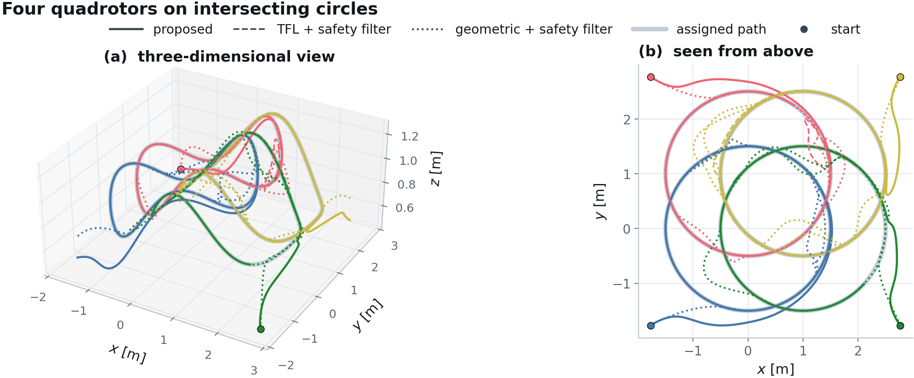
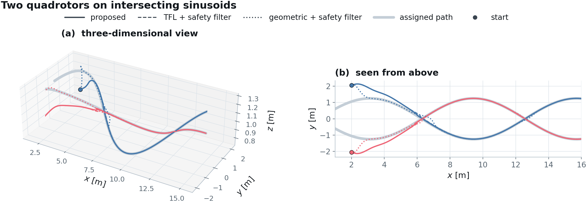
Against two cascades
The first cascade replaces the hard transverse and heading equalities by a full-input minimum-deviation filter on the same transverse feedback linearization. The second is the geometric controller on SE(3) for quadrotors, with an acceleration-level barrier filter in front of it. Barrier constraints, poles, separation distance, initial conditions and control rate are identical across the three.
Proposed
Safety is spent on speed alone.
TFL + safety filter
Nothing pins the transverse rows, so the filter moves them.
Geometric + barrier filter
Avoidance is rebuilt into an attitude, which carries the heading with it.
Seen from above, the view where leaving a path is unmistakable. The same three controllers on the sinusoids:
Proposed
TFL + safety filter
Geometric + barrier filter
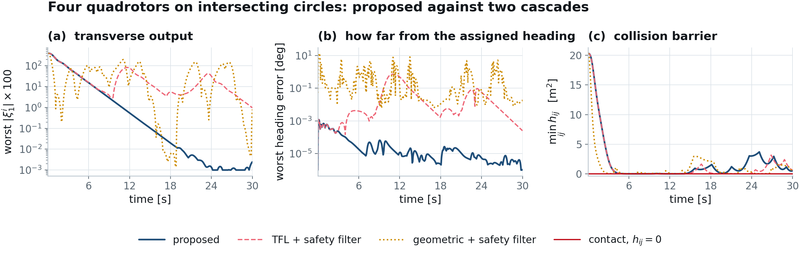
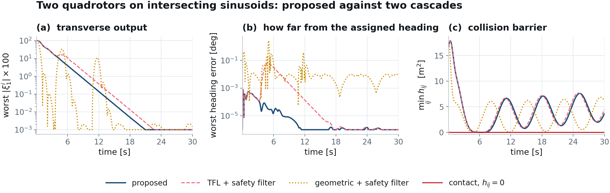
| After convergence, worst over agents | Proposed | TFL + filter | Geometric + filter |
|---|---|---|---|
| Four quadrotors, intersecting circles (measured from t = 12.0 s) | |||
| Transverse output |ξ1| [cm] | 0.55 | 78.60 | 161.87 |
| Distance to the assigned path [cm] | 0.24 | 34.04 | 67.52 |
| Heading error [deg] | 2.67e-05 | 4.83e-01 | 8.05e+00 |
| Closest pair distance [m] | 0.500 | 0.500 | 0.499 |
| Two quadrotors, intersecting sinusoids (measured from t = 8.0 s) | |||
| Distance to the assigned path [cm] | 1.18 | 3.07 | 9.48 |
| Heading error [deg] | 9.10e-06 | 5.02e-03 | 3.56e-01 |
| Closest pair distance [m] | 0.503 | 0.506 | 0.515 |
Green marks the better value in each row. The first row is the quantity the paper reports, the transverse output that Lemma 2 bounds the path distance with. The second is the geometric distance itself. They separate the controllers by 143× and 295× on the first, 143× and 284× on the second. The paper quotes the first row, with the geometric cascade written as 1.62 m. Separation is 0.5 m. The two cascades hold it on the sinusoids. On the circles the geometric cascade closes to 0.4989 m, which is 1.1 mm inside the boundary at the sampled instants, while the proposed controller and the full-input filter stay outside it.
Where the feasibility condition holds
Assumption 1 is a hypothesis, and the paper checks it at one operating point. Here it is checked over a grid that runs well past that point, out to twice the desired speed and to separation distances up to 1.2 m. Each cell is a full rollout, and the horizon is scaled with the desired speed so that every cell covers the same path distance rather than the same wall-clock time. There is no fallback controller anywhere in this study, by design, so a cell that loses feasibility simply stops at that instant.
A cell contains many crossings, so counting whole cells is a blunt measure: a rollout that negotiates twenty encounters and loses feasibility on the twenty-first counts the same as one that fails immediately. The natural unit is the encounter.
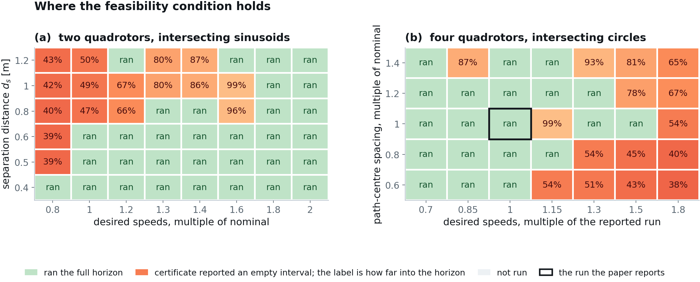
- Read as whole cells, 32 of 48 sinusoid cells and 20 of 35 circle cells ran their full horizon. Read as encounters, which is the unit the constraint acts on, 196 of 227 were negotiated.
- No cell ended in a collision or a path deviation. Across all 83 rollouts the worst barrier value at any sampled instant was -5.2×10-9 m2, which puts the closest sampled approach within 5 nanometres of the separation sphere. What fails is the certificate, and it fails before safety does.
- The boundary is not a simple speed threshold. Cells that stop are spread through the grid, and the median stopped cell had already cleared 58 percent of its horizon on the sinusoids and 54 percent on the circles.
How feasibility is lost
Remark 3 predicts the mechanism, and one cell of the map shows it directly. A collision row bounds the slack from above while its authority is positive. As that authority approaches zero the bound it produces walks away, and when the authority changes sign the row flips to bounding from below, which empties the interval in a single step.
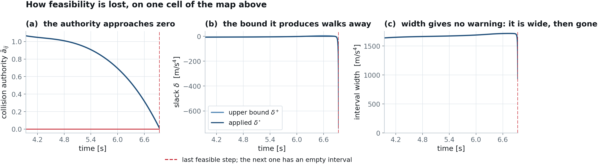
This is the argument for evaluating the certificate every step rather than extrapolating a margin. The test costs one pass over N + 6 rows, so there is no reason to approximate it.
Authority through an encounter
The same quantities on a run that does not stop. The collision authority still passes through zero once per encounter, and nothing happens, because the row's offset has the sign that keeps the interval non-empty across the crossing.
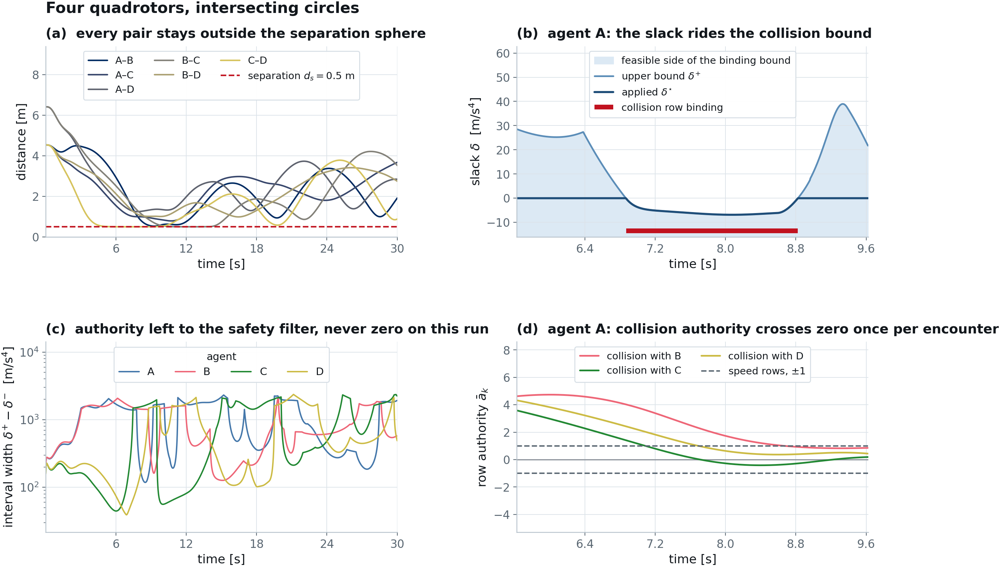
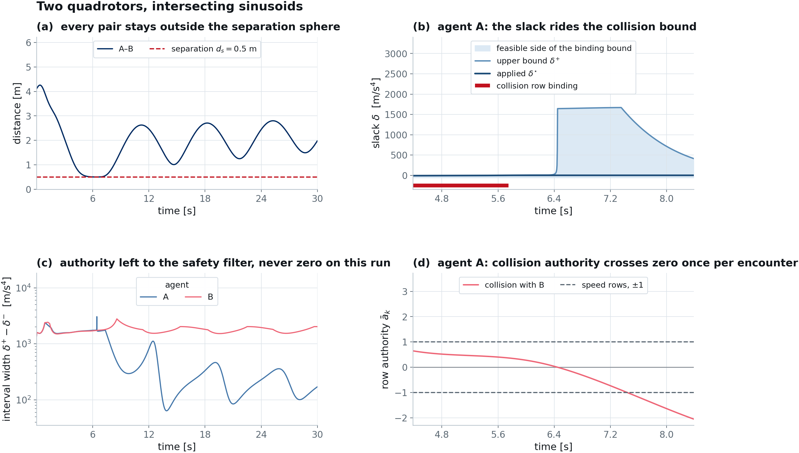
What the sampling period costs
The controller holds each input constant between updates, so the barrier conditions are enforced on the sampled solution and not between samples. The paper says so and claims nothing more. This is the empirical part of that statement, on the four-quadrotor scenario at 100 Hz, 200 Hz, 500 Hz, 1000 Hz, 2000 Hz.
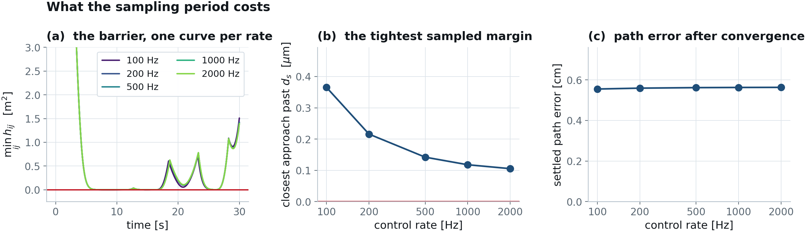
- The worst sampled barrier value over all five rates is 1.1×10-7 m2, so no rate in this range produced a sampled excursion past the separation boundary.
- This is evidence, not a guarantee. An intersample certificate needs the bound on the barrier derivative over one period, which we do not claim.
Cost of the safety step
The paper quotes one ratio. The measurement behind it separates two things that a single number runs together: the projection against a numerical solve of the same program, and the whole per-agent control step, which both controllers pay alike. OSQP is timed through its own interface rather than through a modelling layer, so the comparison charges it for the solver and nothing else.
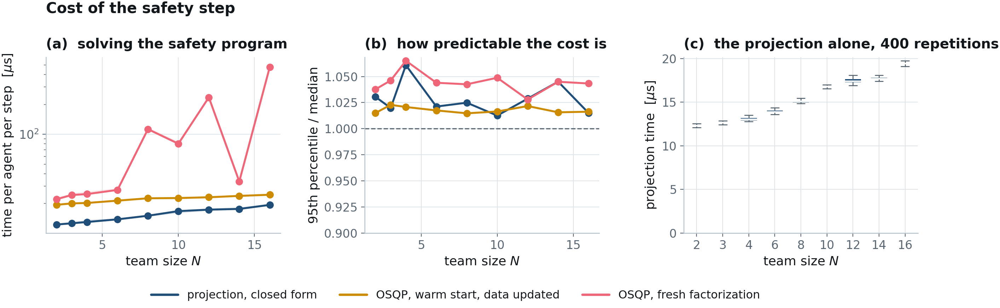
| Team size N | Rows | Projection [µs] | OSQP solve [µs] | Ratio |
|---|---|---|---|---|
| 2 | 8 | 12.3 | 22.2 | 1.8× |
| 3 | 9 | 12.7 | 24.4 | 1.9× |
| 4 | 10 | 13.0 | 25.0 | 1.9× |
| 6 | 12 | 13.9 | 27.5 | 2.0× |
| 8 | 14 | 15.1 | 112.7 | 7.5× |
| 10 | 16 | 16.8 | 80.4 | 4.8× |
| 12 | 18 | 17.4 | 236.0 | 13.6× |
| 14 | 20 | 17.7 | 33.4 | 1.9× |
| 16 | 22 | 19.4 | 476.0 | 24.5× |
Median over 400 repetitions. Apple M1, 8 cores, Python 3.12.2, OSQP 1.1.3. The projection is 2.0 times faster than the solve at the median team size, and the gap is not the whole story. The solve time depends on how many iterations the problem happens to need, so it ranges from 1.8 to 24.5 times the projection across these team sizes, while the projection itself is a fixed number of operations. Both controllers also pay the same per-agent cost for path geometry and row assembly, which dominates this Python prototype and is the same code in both.
The responsibility split
Remark 5 says that safety does not imply continued progress, and that a symmetric approach can deadlock unless priority or scheduling logic rules it out. Here two agents arrive at a crossing at the same speed on mirrored paths, which is that approach built on purpose. The responsibility split is the only thing that changes between the three runs, and every split keeps the pair sum at one, so the centralized condition is untouched.
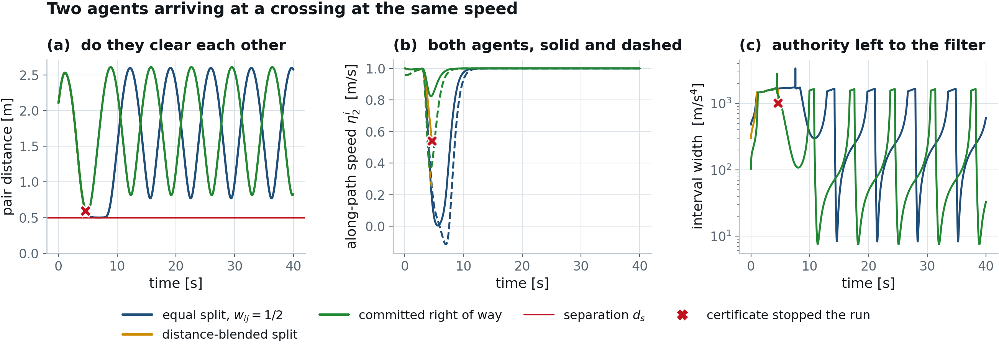
Actuator bounds
Section IV-D argues that any constraint affine in the input reduces to an interval of the same form, so actuator bounds add rows without changing the test. A box on the three torques is two rows per bound, the thrust input enters the same way, and the certificate stays exact. Tightening the box below the demand does not produce a solver failure: at 21 mN m the certificate reports the box infeasible at the first step, before the vehicle moves.
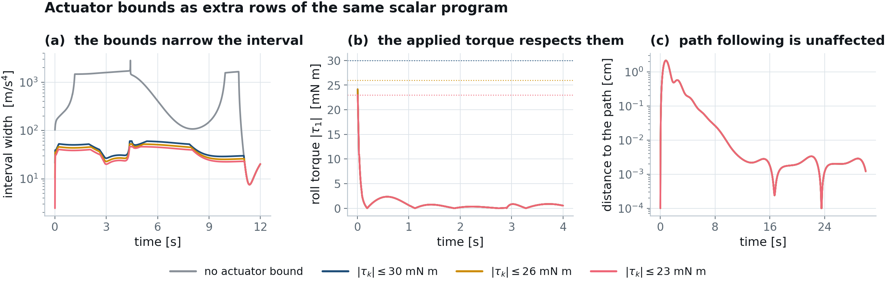
Path distance and conditioning
Two quantities the paper quotes as single numbers, shown as time series. The first is the distance to the assigned path, which is the geometric quantity the transverse output bounds. The second is the smallest singular value of the decoupling matrix, which is what regularity of the transverse feedback linearization comes down to in practice.
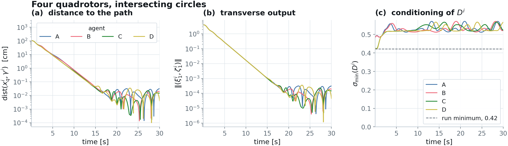
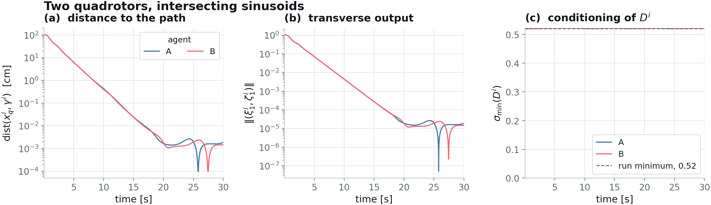
- Worst transverse output after convergence, four agents: 0.55 cm, against 78.6 cm for the full-input filter and 1.62 m for the geometric cascade. As a geometric distance the proposed controller is 0.24 cm from its path.
- Smallest singular value of the decoupling matrix over the run: 0.421.
- Thrust margin above the positivity floor: 17.1 N.
Every parameter, for all three controllers
The comparison is only worth reading if the three controllers were given the same problem. These are the complete settings behind every figure on this page.
Shared plant and scenario
| Parameter | Value |
|---|---|
| Mass m | 1.923 kg |
| Inertia J | diag(1.152, 1.152, 2.18) × 10-2 kg m2 |
| Gravity g | 9.8 m/s2 |
| Control rate | 200 Hz, zero-order hold |
| Integrator | Drake continuous plant, quaternion floating body |
| Separation ds | 0.5 m |
| Circle radius R | 1.5 m |
| Circle centres | (0,0), (0,1), (1,0), (1,1) m |
| Height field | z = 1 + 0.25 sin(2πx/3) m |
| Desired speeds, circles | ±0.63 and ±0.525 m/s |
| Sinusoid geometry | y = ±1.25 sin(0.5x), z = 1 + 0.25 sin(0.5x) m |
| Desired speeds, sinusoid | 1.0 and 0.96 m/s |
| Start | 1 m off path, level attitude, hover thrust |
Proposed controller
| Parameter | Value |
|---|---|
| Transverse gains kξ | 200, 400, 90, 30 |
| Altitude gains kζ | 100, 200, 60, 20 |
| Speed gains | triple pole at −2: 8, 12, 6 |
| Heading gains | 10, 12 |
| Cost weights | W = I4, P = 100 |
| Collision barrier | quadruple real pole at −3.75 |
| Attitude barrier | double pole at −10, margin ε = 0.1 rad |
| Thrust barrier | double pole at −10, fmin = 0.94 N |
| Speed barrier | triple pole at −20, vmax = 1 m/s |
| Responsibility | wij = 1/2 unless stated |
| Solve | closed-form projection, no numerical solver in the loop |
TFL with a full-input safety filter
| Parameter | Value |
|---|---|
| Nominal feedback | the same transverse feedback linearization, by inversion |
| Filter | min ‖ν − νTFL‖2 subject to the same barrier rows |
| Barrier rows | identical: attitude, thrust, collision, same poles and weights |
| Difference from proposed | the hard equality is dropped, and there is no slack |
| Solve | OSQP through cvxpy, eps 10-8, CLARABEL fallback |
Geometric controller with a barrier filter
| Parameter | Value |
|---|---|
| Position gains | kx = 16 m, kv = 5.6 m |
| Attitude gains | kR = 8.81, kΩ = 2.54 |
| Reference | the same path at the same physical speed |
| Filter | acceleration-level collision barrier, double pole at −3.75 |
| Separation | 0.5 m, as above |
Reproducing this
The simulation code is in the repository under sim/. The verification gate runs
first and checks the controller algebra over several thousand random admissible states, so a
broken build fails before any scenario is flown.
# set up
git clone https://github.com/gradslab/safe_multiquad_pf.git
cd safe_multiquad_pf/sim
pip install -r requirements.txt
python3 tests/test_layer.py
# the two scenarios
python3 experiments/run_circles.py --scenario circles --agents 4 --offpath --vscale 1.4 --tag _cs1p4
python3 experiments/run_circles.py --scenario sine --agents 2 --offpath
# the two cascades, same scenario
python3 experiments/run_circles.py --scenario circles --agents 4 --offpath --vscale 1.4 --controller baseline --tag _cs1p4
python3 experiments/run_circles.py --scenario circles --agents 4 --offpath --vscale 1.4 --controller se3 --tag _cs1p4
# the studies on this page
python3 experiments/web/sweep.py --grid sine
python3 experiments/web/sweep.py --grid circles
python3 experiments/web/runs.py --study all
python3 experiments/web/bench_solver.py
python3 experiments/web/renders.py
# figures, each gated before it is written
python3 experiments/web/figs_scenes.py
python3 experiments/web/figs_core.py
python3 experiments/web/figs_studies.py
python3 experiments/web/page_numbers.py
python3 experiments/web/build_page.pyThe animations need Drake with a VTK renderer:
python3 experiments/web/renders.py writes all fourteen, three camera angles per
controller.
Citation
@unpublished{tariq_decentralized,
author = {Hamza Tariq and Adeel Akhtar},
title = {Decentralized Safe Path Following for Multiple Quadrotors
on Intersecting Paths},
note = {Under review},
year = {2026}
}